Overview
The app focuses on making friends rather than one-to-one dating. It is designed for international students, especially those new to America who have little experience with dating apps here and need a way to meet people in a new city.
Problems and “how might we”
User research surfaced the problems; grouping them led to what users need in general.
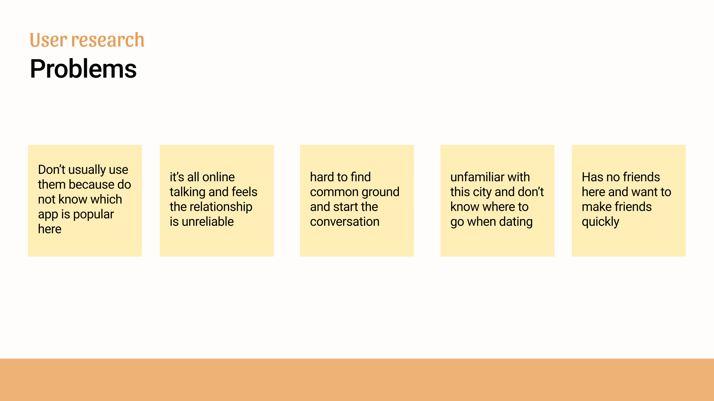
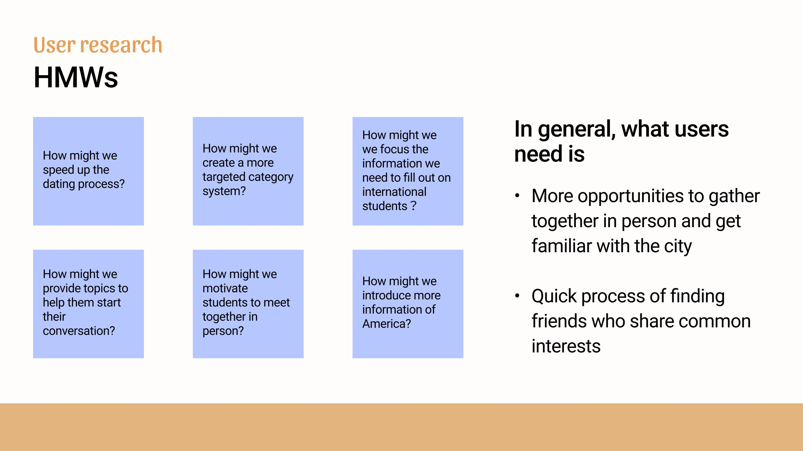
Meet in person
More opportunities to gather and get familiar with the city.
Find friends quickly
A fast way to find people who share common interests.
Less pressure
Groups make a first conversation easier than one-to-one.
Two ideas
Both come straight from the needs above.
Group match
A quick way to find friends who share common interests — join a group or create your own.
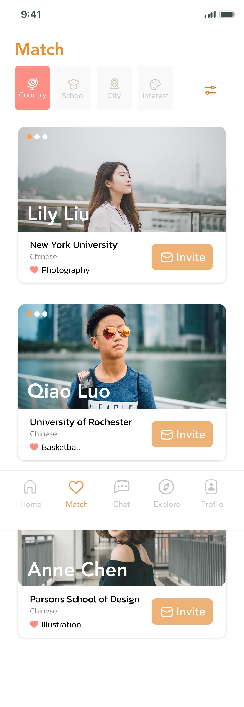
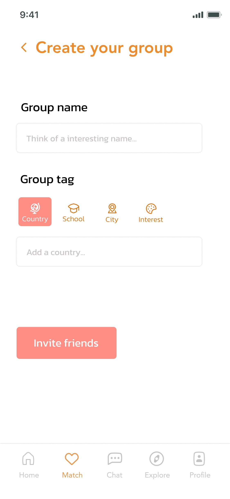
Recommended hang-out places
More chances to see each other in person and get to know the city.
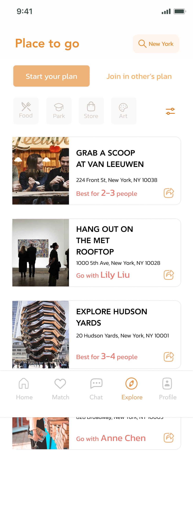
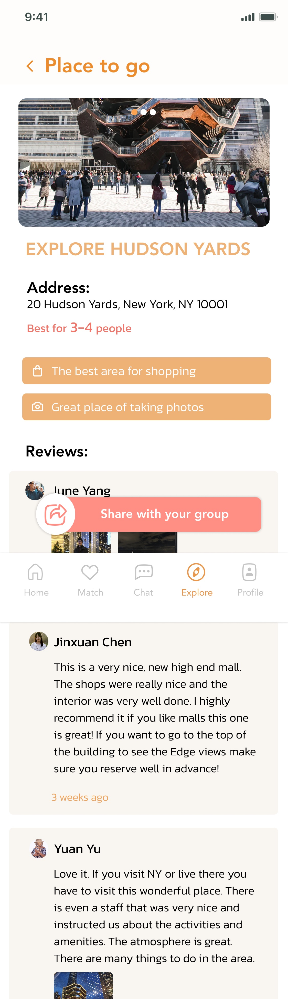
From references to wireframes
Example flows from existing apps, a brainstorm, then wireframes of the main path.
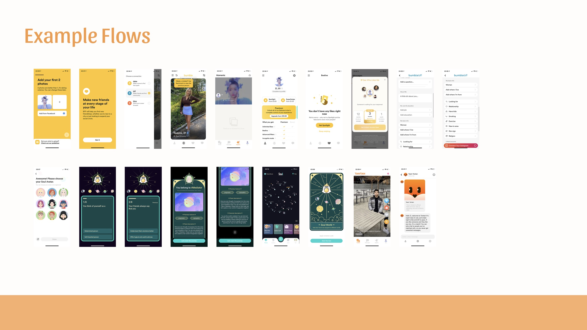
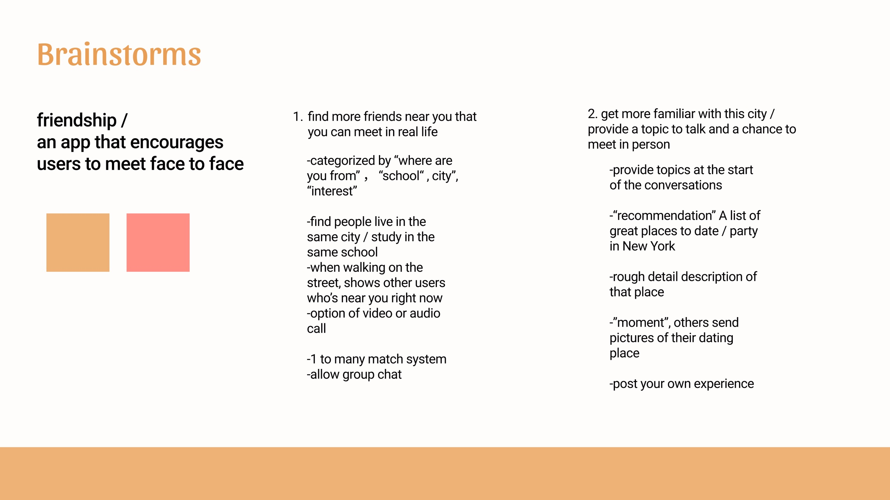
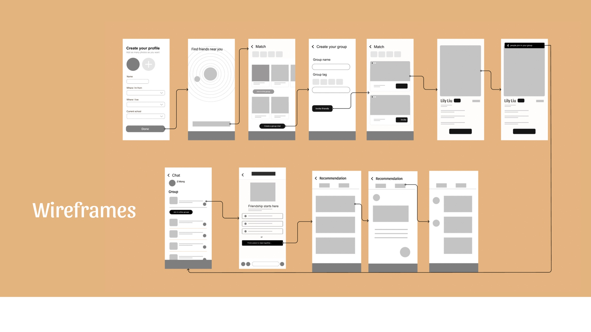
Key pages, in order
From setting up a profile to meeting a group at a place the app suggested.
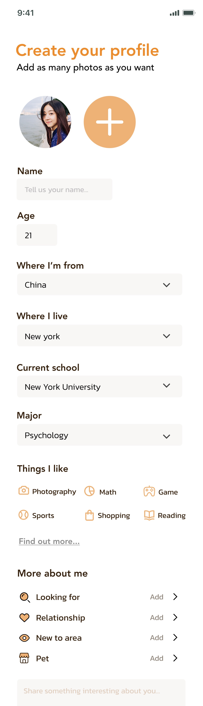
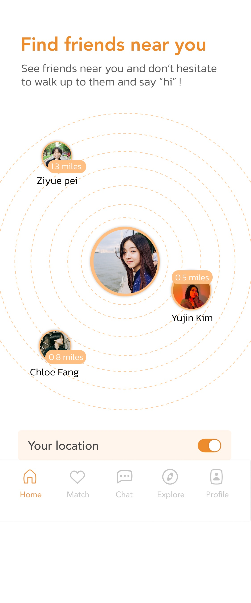
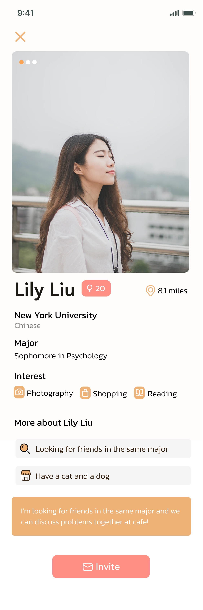
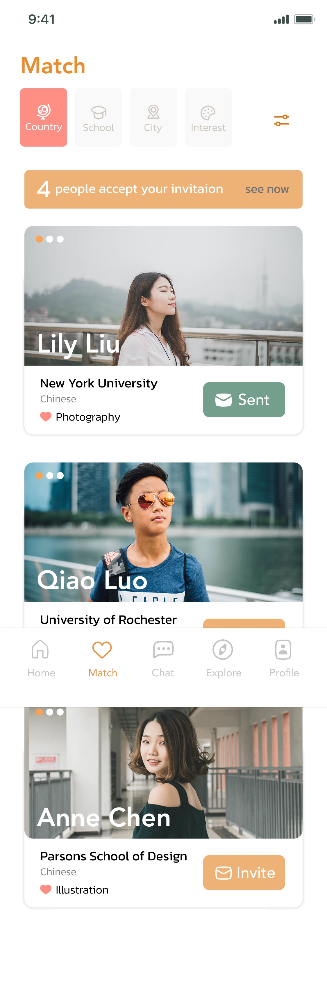
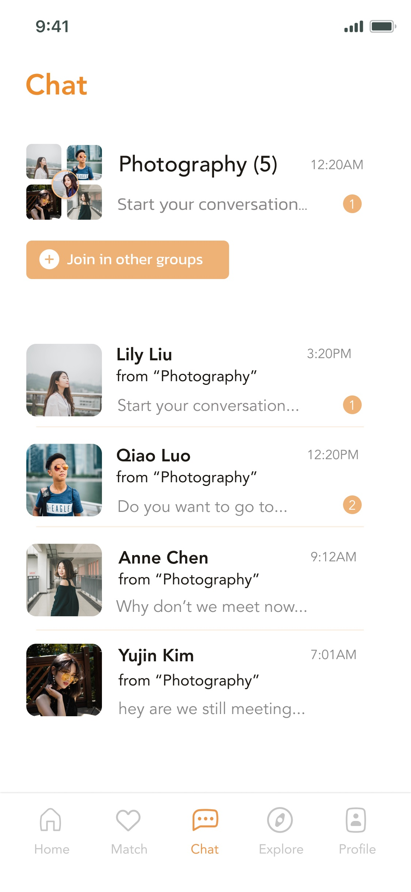
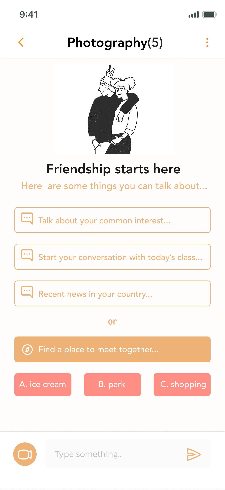
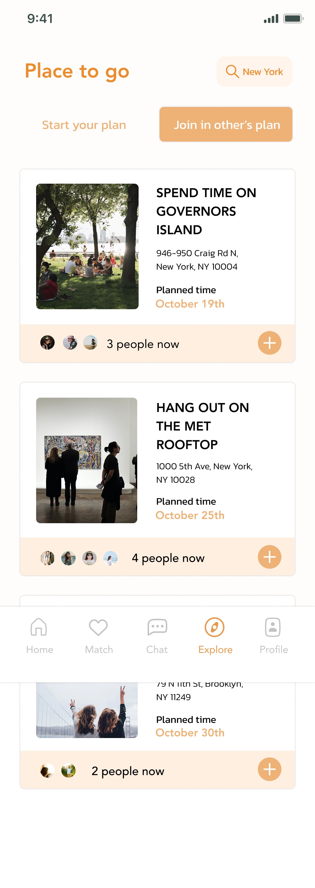
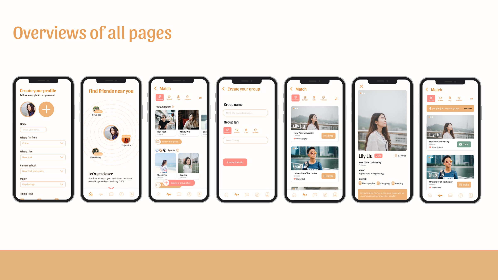
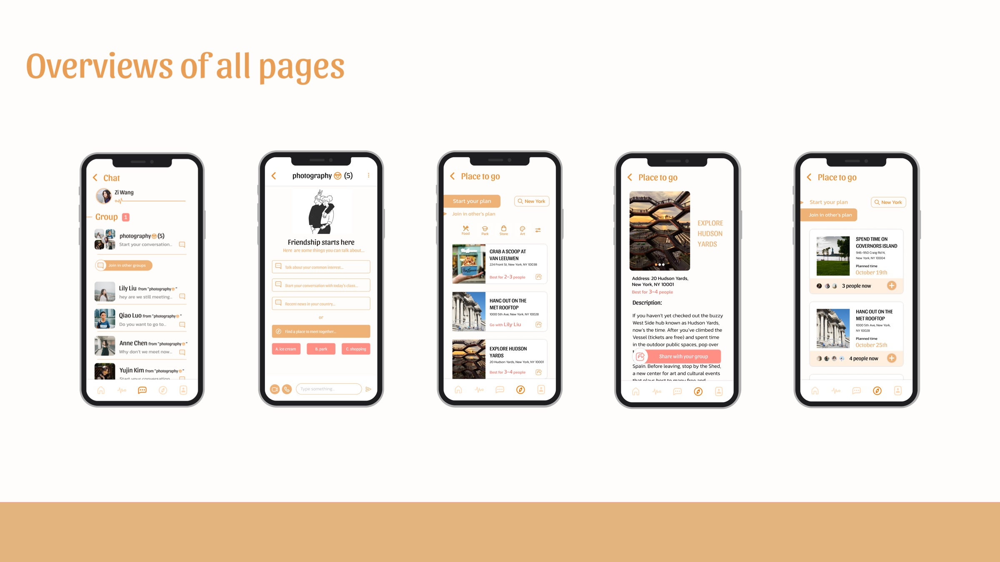